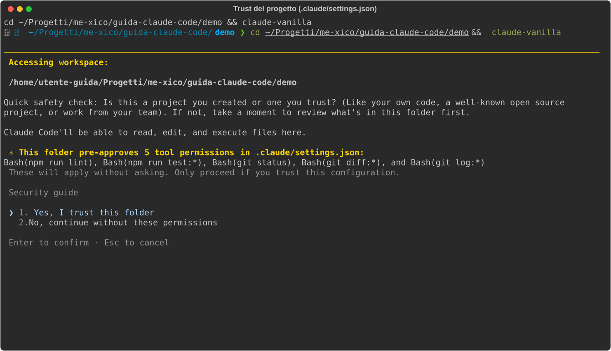

02 - Setup and configuration¶
Verified on July 15, 2026 against the official docs (v2.1.210). Live example: this guide's
demo/sample project contains a real React/TS project with an actualCLAUDE.mdand.claude/settings.json.
Claude Code's configuration revolves around three things: where the files live, what you write in them (permissions, model, instructions), and how Claude combines them when a session starts. This chapter covers them in that order.
Where the configuration lives¶
What it is. Claude Code reads configuration from two separate worlds:
~/.claude/ in your home directory (personal: applies to you, on any
project) and .claude/ inside the project (shared with the team via git).
The useful analogy is user preferences vs. repo config: .editorconfig
belongs to the project and travels with the code, your editor settings are
yours and stay on your machine.
How the merge works. When a session starts, the settings from the various levels are combined; when the same key is defined at multiple levels, the stronger level wins. The precedence, from strongest to weakest:
| Level | File | In git? |
|---|---|---|
| Managed (enterprise) | /etc/claude-code/managed-settings.json |
managed by IT, cannot be overridden |
| CLI flags | claude --permission-mode … |
no (session only) |
| Local | .claude/settings.local.json |
no (gitignored automatically) |
| Project | .claude/settings.json |
yes |
| User | ~/.claude/settings.json |
no |
Read it from the bottom up: your global defaults (~/.claude/settings.json)
apply everywhere, the project can override them, you can override the
project with the local file, a CLI flag only applies to that session, and
above everything sit any enterprise constraints.
The practical rule for deciding where to put something: team conventions
(permissions, hooks) go in .claude/settings.json, it's committed, so
whoever clones the repo gets them; your personal overrides for that project
go in .claude/settings.local.json, which Claude Code gitignores
automatically; the defaults you want on every project go in
~/.claude/settings.json. The files hot-reload: you edit, and the
running session picks up the change without a restart (the only exceptions
are model and outputStyle).
settings.json: the keys you actually use¶
What it is. The settings file is a JSON that governs Claude Code's
behavior: what it can do without asking your permission, which model to
use, which hooks to run. You create it by hand (or /permissions does it
when you save a rule from the panel); it doesn't exist until someone writes
it.
How to write it. This is the complete file from the demo project,
demo/.claude/settings.json:
{
"permissions": {
"allow": [
"Bash(npm run lint)",
"Bash(npm run test:*)",
"Bash(git status)",
"Bash(git diff:*)",
"Bash(git log:*)"
],
"deny": [
"Read(.env)",
"Read(.env.*)",
"Bash(cat *.env*)"
]
}
}
Each rule follows the syntax Tool(specifier): the name of a Claude Code
tool (Bash, Read, Edit, …) and, in parentheses, a glob pattern for
what the rule covers. So Bash(npm run test:*) covers npm run test and
every variant of it (npm run test:unit, …), Read(*.md) covers reading
markdown files, Edit(.github/**) covers edits under .github/.
There are three lists, and they answer three different questions:
allow: "do it without asking me", no confirmation prompt.deny: "never, under any circumstances", always blocked, and it beats everything else (even anallowthat would cover it).ask: "ask me explicitly every time".
How it works in practice. When Claude is about to use a tool, the
request is matched against the rules: if it matches a deny it's blocked,
if it matches an allow it goes through without a prompt, otherwise the
current permission mode applies (next section). The most important pattern
to copy right away is the deny on secrets: .env and friends must not
be readable even by accident. Note how the demo's deny closes both doors:
the Read tool (the first two rules) and reading via the shell with cat
(the third). Blocking only one would leave the other open.
There's one moment when this file gets put in front of you: the first time
you open a project that contains pre-approved permissions, Claude Code
lists them and asks whether you trust them. It's a sensible safeguard, that
file comes from the repo, in other words from other people, and this is the
trust dialog for our demo, with the allow and deny rules shown above:

Besides permissions, the other keys you'll meet in this guide: model,
hooks (ch. 07), env (environment variables for the session),
statusLine, outputStyle, autoUpdatesChannel (ch. 01),
enabledPlugins (ch. 09), permissions.defaultMode (below).
Permission mode¶
What it is. If the rules in settings.json decide the fate of
individual actions, the permission mode is the global dial: how much Claude
can do without asking for everything not covered by a rule. You change it
in three ways: Shift+Tab during the session (the most convenient),
--permission-mode at startup, or permissions.defaultMode in the
settings to make it the default.
| Mode | What it does without asking |
|---|---|
default (Manual) |
reads only; asks for edits and commands |
acceptEdits |
reads + file edits + safe fs operations |
plan |
reads only: explores and proposes a plan, touches nothing |
auto |
everything, but every action goes through a safety classifier; requires recent models and an enabled account |
dontAsk |
only what's in allow, everything else is denied (for non-interactive use) |
bypassPermissions |
everything, no permission checks (but hook denies still apply: ch. 07): only in isolated containers/VMs |
What it looks like. In default (Manual), every write is shown to you
before it runs. Here's the request for creating a file: note that the
prompt shows the full diff of what would be written, you decide by
looking at the actual content, not a description, and that among the
options there's a shortcut to switch straight to acceptEdits if you're
tired of confirming every edit:

The recommended progression: default until you've built up confidence,
then acceptEdits for day-to-day work, plan when you tackle big tasks
where you want to see the plan before the code (ch. 03). Whatever mode you
pick, the protected paths (.git/, .claude/, your shell dotfiles) are
never auto-approved: those it always asks about.
To view and edit the rules without touching the JSON by hand there's the
/permissions panel. Below you see it open on the demo project: note the
tabs at the top, Allow / Ask / Deny / Workspace (the three lists, plus
the authorized directories), and how the rules listed are exactly the ones
from the settings.json above, each with the level it comes from next to
it:

CLAUDE.md: the permanent instructions¶
What it is. CLAUDE.md is the instruction file Claude reads at the
start of every session: the project's onboarding document, written once and
always in effect. Everything you'd tell a new colleague on day one, which
commands to run, which conventions to follow, where the tests live, goes
here, so you don't have to repeat it every session.
Where it lives. Like the settings, it exists at multiple levels, loaded in order (the deep dive is in ch. 04):
~/.claude/CLAUDE.md: your personal preferences, apply everywhere./CLAUDE.md(or.claude/CLAUDE.md): project conventions, committed./CLAUDE.local.md: personal notes on the project, gitignored.claude/rules/*.md: path-scoped rules (below)CLAUDE.mdin subdirectories: loaded on demand, when Claude works in there (useful in monorepos)
How to write it. It's free-form markdown: no schema, no required
fields. This is the complete demo/CLAUDE.md, a realistic example from a
frontend project:
# demo-app
SPA React + TypeScript (Vite). Componenti in `src/components/`, un file per
componente, stile con CSS modules (niente styled-components).
## Comandi
- `npm run dev` — dev server
- `npm run test` — test (Vitest); lanciali prima di dichiarare finito un task
- `npm run lint` — ESLint su src/
## Convenzioni
- TypeScript strict: niente `any`, preferisci type inference dove possibile.
- Componenti funzione + hooks, niente class components.
- I test stanno accanto al componente: `Button.tsx` → `Button.test.tsx`.
- Messaggi di commit in inglese, imperativi ("add login form").
Note the structure: what the project is, the commands (with the when to use them: "before declaring a task done"), the conventions. Keep it under ~200 lines, it gets loaded every session, and a mile-long CLAUDE.md dilutes the instructions that matter.
Two more mechanisms worth knowing:
- Imports: a line starting with
@path/to/fileincludes that file in the context. It's recursive (an imported file can import others, up to 4 hops), useful for splitting long instructions into thematic files. - Path-scoped rules: files in
.claude/rules/*.mdhave apaths:frontmatter with globs, and they activate only when Claude touches those files, unlike the CLAUDE.md, which is always in context. Perfect for rules that only concern one part of the codebase. They also exist at the user level, in~/.claude/rules/.
The configuration commands¶
Almost everything we've seen can also be managed from inside the session, without opening an editor:
| Command | What it's for |
|---|---|
/init |
generates the project's CLAUDE.md by analyzing the codebase |
/config |
settings UI; also direct: /config model=opus theme=dark |
/permissions |
manages allow/deny/ask and the authorized directories |
/model |
switches model |
/memory |
lists/edits CLAUDE.md, CLAUDE.local.md, and rules |
/doctor |
installation health; also suggests trims for the CLAUDE.md and pre-approvals for frequent commands |
/statusline |
configures the status bar |
The entry point is /config: a navigable panel with the tabs
Settings / Status / Config / Usage / Stats and a filterable list of
every setting. Here's what it looks like: note that among the entries
there's also the Default permission mode we talked about, changeable from
here instead of in the JSON:

Two commands deserve an extra mention. /init is the right way to start on
an existing project: it analyzes the codebase and generates a first
CLAUDE.md, which you then refine by hand. And /doctor isn't just
diagnostics: it also suggests trims for the CLAUDE.md when it grows too
large and pre-approvals for the commands you always confirm, two bits of
maintenance you'd otherwise forget to do.
Environment variables worth knowing¶
CLAUDE_CONFIG_DIR: moves~/.claudeelsewhere. Useful for keeping completely separate profiles (work/personal/testing): each directory has its own settings, its own credentials, its own CLAUDE.md files.DISABLE_AUTOUPDATER=1: turns off the background update check. It goes in theenvkey of the settings, which is the place for environment variables you want active in every session.
In short: commit .claude/settings.json and CLAUDE.md (they're the
team standard), keep personal stuff in *.local.*, add the deny on .env
files right away, and use Shift+Tab to dial trust up and down. Next
chapter: how you actually work day to day.